무선설비기사 (2009-07-26 기출문제)
1과목: 디지털 전자회로
1. 이상적인 연산 증폭기의 R2 에 흐르는 전류(I)는? (단, R1=2[kΩ], R2=3[kΩ], Vi=4[V]이다.)
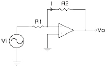
- 0.2[mA]
- 0.5[mA]
- 2[mA]
- 5[mA]
(정답률: 알수없음)

2. 그림과 같은 연산증폭기의 전압이득 Vo/Vs는?
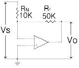
- -5
- 0.2
- 5
- -0.2
(정답률: 62%)
3. 그림과 같이 평활회로를 가진 반파 정류회로에서 다이오드에 걸리는 최대 역전압[V]는? (단, Vi=Vmsinωt[V])
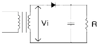
- Vm/π
- Vm/√2
- Vm
- 2Vm
(정답률: 알수없음)
4. 다음 회로의 전달 특성으로 옳은 것은? (단, D는 이상적인 다이오드이다.)
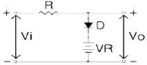
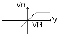
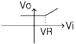
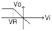
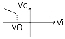
(정답률: 알수없음)
5. 다음 중 그림에서 다이오드는 무엇에 대한 변화를 보상하기 위한 것인가?
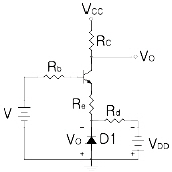
- Rb
- VBE
- VCC
- VCE
(정답률: 알수없음)
6. 그림과 같은 증폭회로에서 커패시터 C의 주된 기능은?
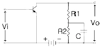
- 기생진동 방지용
- 발진 방지용
- 정전용량 중화용
- 저주파 특성 개선용
(정답률: 알수없음)
7. 다음 중 안정적인 발진회로에 수정진동자를 사용하는 주된 이유는?
- 발진주파수가 낮기 때문이다.
- Q(Quality factor)가 크기 때문이다.
- 안정도가 가변되기 때문이다.
- 발진주파수를 임의로 변화시킬 수 있기 때문이다.
(정답률: 70%)
8. 변조도 40[%]의 진폭변조에서 반송파의 평균전력이 300[mW]일 때 피변조파의 평균전력[mW]은?
- 100
- 300
- 324
- 424
(정답률: 86%)
9. 다음 멀티바이브레이터의 Q1이 ON 상태로 있는 동안은?
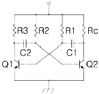
- C1이 R1을 통해 방전하는 동안
- C2가 R2를 통해 방전하는 동안
- C1이 R1을 통해 충전하는 동안
- C2가 R2을 통해 충전하는 동안
(정답률: 90%)
10. 1[MHz]을 입력하는 분주 회로에서 출력을 250[KHz]로 만들려면 몇 개의 T 플립플롭이 필요한가?
- 1
- 2
- 3
- 4
(정답률: 55%)
11. 다음 그림의 역할로 옳은 것은?
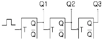
- 동기식 10진 카운터
- 비동기식 8진 카운터
- 동기식 5진 카운터
- 비동기식 3진 카운터
(정답률: 87%)
12. 다음 이상발진기의 회로에서 발진주파수는 약 얼마인가? (단, C=1[nF], R=10[kΩ])
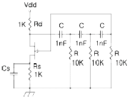
- 6497[Hz]
- 9456[Hz]
- 185[kHz]
- 359[kHz]
(정답률: 70%)
13. 그림의 TTL 게이트가 수행하는 논리기능은?
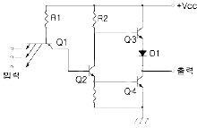
- NOT
- NOR
- AND
- NAND
(정답률: 77%)
14. 다음 그림의 고정 바이어스 회로에서 IC의 옳은 표현은?
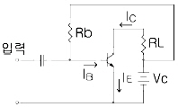
- IC=βIB
- IC=αIE+ICO
- IC=βIB(1-β)ICO
- IC=βIB+(1+β)ICO
(정답률: 44%)
15. 다음의 연산증폭기에서 입력 신호전압 VS=0.5[V]일 때 출력전압 V0는 몇 [V]인가?
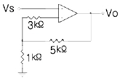
- 1
- 2
- 3
- 4
(정답률: 50%)
16. 다음 중 카르노도를 간략화한 결과는?
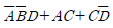
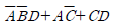
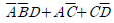
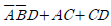
(정답률: 94%)
17. 차동증폭기에서 차신호에 대한 전압이득이 Ad, 동상신호에 대한 전입이득이 Ac인 경우 동상신호 제거비(CMRR)를 옳게 나타낸 것은?
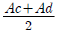
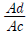
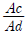
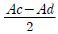
(정답률: 70%)
18. 다음 중 신호 u(t)=10cos(20πt+πt2)에서 t=0 일 때 순시주파수는?
- 5[Hz]
- 10[Hz]
- 20[Hz]
- 30[Hz]
(정답률: 79%)
19. 다음 중 비동기 카운터(asynchronous counter)의 설명으로 옳지 않는 것은?
- 리플카운터(ripple counter) 라고도 부른다.
- 여러 개의 플립플롭을 병렬로 연결하여 구성한다.
- 각 플립플롭의 출력을 다음 단의 클럭 입력에 가하는 구조이다.
- 각 단을 통과할 때마다 지연시간이 누적되므로 고속의 카운터에는 부적합하다.
(정답률: 90%)
20. 어떤 2진 카운터를 이용하여 255까지 카운터하려고 한다. 이 경우 모듈러스(modulus)와 최소로 필요한 플립플롭의 개수가 순서대로 옳은 것은?
- 255, 8
- 256, 8
- 255, 9
- 256, 9
(정답률: 93%)
2과목: 무선통신 기기
21. FM 변조에서 반송파 주파수가 100[MHz]이고, 변조 신호 주파수가 15[kHz]일 때 최대 주파수 편이가 ±75[kHz]이다. 이 때 점유주파수 대역폭은 몇 [kHz]인가?
- 90[kHz]
- 120[kHz]
- 180[kHz]
- 240[kHz]
(정답률: 95%)
22. 일반적으로 VHF FM 송신기에서는 주파수가 낮은 단에서 변조한 후 주파수 체배하여 최종 송신주파수를 만들고 있다. 다음 중 그 이유로 가장 적합한 것은?
- 주파수 편이를 직선범위 내에서 얻기 위하여
- 수정 발진부에서는 FM 변조가 쉽게 걸리므로
- 높은 주파수 단에서 주파수 변조가 불가능 하므로
- 높은 주파수 단에서는 변조시 반송주파수까지 변동하기 때문에
(정답률: 70%)
23. 고주파 증폭기의 이득이 20[dB], 변환이득이 -5[dB]인 슈퍼헤테로다인 수신기의 입력에 50[μV]의 고주파 전압을 인가하여 중간 주파 증폭기의 출력단에서 0.5[V]를 얻었다면 중간 주파 증폭기의 전압 이득은 몇 [dB]인가?
- 73[dB]
- 65[dB]
- 53[dB]
- 45[dB]
(정답률: 67%)
24. 레이더에서 발사된 펄스 전파가 200[μs]후에 목표물에 반사되어 되돌아 왔다. 목표물까지의 거리는 얼마인가?
- 3[km]
- 15[km]
- 30[km]
- 60[km]
(정답률: 70%)
25. 마이크로파 송신기의 전력 측정에 사용되는 방향성결합기를 이용하여 측정할 수 없는 것은?
- 정재파비
- 위상차
- 결합도
- 반사파전력
(정답률: 64%)
26. 다음 중 FM 수신기의 진폭제한 방법으로 적합 하지 않은 것은?
- 다이오드를 이용하는 방법
- 변성기의 포화특성을 이용하는 방법
- 연산증폭기와 다이오드를 이용하는 방법
- FET의 포화특성 및 차단특성을 이용하는 방법
(정답률: 55%)
27. 다음 중 무선 송신기에서 발생하는 고조파 억제 대책에 대한 설명으로 적합하지 않은 것은?
- 동조회로의 Q를 높게 설계한다.
- 급전선에 트랩 또는 필터를 삽입한다.
- 고주파 전력증폭기에 push-pull 회로를 사용한다.
- 종단 전력증폭기와 안테나 사이를 밀결합한다.
(정답률: 89%)
28. 다음 중 데이터 신호속도와 변조속도가 같은 디지털 변조방식은?
- BPSK
- QPSK
- 8PSK
- 16PSK
(정답률: 73%)
29. 중간주파수가 455[kHz]인 슈퍼헤테로다인 수신기에서 수신 주파수 1000[kHz]에 대한 영상주파수는 몇 [kHz] 인가?
- 1910[kHz]
- 1850[kHz]
- 1550[kHz]
- 1450[kHz]
(정답률: 알수없음)
30. 다음의 양자화 방법 중에서 ADM, ADPCM에 주로 사용되는 것은?
- 선형 양자화
- 비선형 양자화
- 비예측 양자화
- 적응형 양자화
(정답률: 67%)
31. 음성신호를 8[kHz]로 표본화한 후 8bit로 부호화하여 실시간으로 전송하기 위해서는 64[kbps]의 속도가 요구된다. 이러한 데이터를 QPSK로 변조한다면 변조속도는 몇 [baud]인가?
- 8000[baud]
- 16000[baud]
- 32000[baud]
- 64000[baud]
(정답률: 78%)
32. FM 수신기에서 사용되는 잡음 억제회로가 아닌 것은?
- 뮤팅(muting) 회로
- 리미터(limiter) 회로
- 스퀄치(squelch) 회로
- 잡음억제기(noise reducer)
(정답률: 67%)
33. 다음 중 QAM의 특징에 대한 설명으로 적합하지 않은 것은?
- QAM 신호는 2개의 직교성 DSB-SC 신호를 선형적으로 합성한 것으로 볼 수 있다.
- M진 QAM의 대역폭 효율은 M진 PSK의 대역폭 효율과 동일하다.
- QAM은 비동기 검파 또는 비동기 직교 검파방식을 사용하여 신호를 검출한다.
- QAM은 APK 변조방식으로 잡음과 위상변화에 우수한 특성을 가진다.
(정답률: 84%)
34. PM 변조회로를 이용하여 FM 파를 발생시키기 위하여 사용되는 회로는?
- 적분회로
- 스퀄치 회로
- 미분회로
- De-emphasis 회로
(정답률: 65%)
35. 슈퍼헤테로다인 수신기에서 중간주파수를 높게 선택할 경우 나타나는 현상이 아닌 것은?
- 인입현상이 개선된다.
- 전기적 충실도가 개선된다.
- 근접주파수 선택도가 개선된다.
- 영상주파수 선택도가 개선된다.
(정답률: 86%)
36. 다음 중 실효 선택도에 속하지 않는 것은?
- 혼변조
- 상호변조
- 감도 억압 효과
- 영상주파수 선택도
(정답률: 67%)
37. 다음 중 주파수 체배기에 주로 사용되는 증폭기의 바이어스 방법은?
- A급
- B급
- AB급
- C급
(정답률: 92%)
38. 다음 중 GPS를 이용하여 위치 측정 시 발생되는 주요 오차 인자에 속하지 않는 것은?
- 수신기 잡음
- 대류층의 굴절
- 전리층의 반사
- GPS 위성 시계 오차
(정답률: 30%)
39. 다음 중 납축전지의 백색 황산납 발생의 직접적인 원인에 속하지 않는 것은?
- 과도하게 충전할 때
- 방전한 상태로 그대로 방치할 때
- 전해액의 비중이 너무 낮을 때
- 소전류로 장시간에 걸쳐서 방전할 때
(정답률: 70%)
40. 다음 중 고주파 증폭회로의 역할로 적합하지 않은 것은?
- 수신기의 감도 개선
- 불필요한 전파발사 억제
- 근접주파수 선택도 개선
- 공중선 회로와의 정합 용이
(정답률: 77%)
3과목: 안테나 공학
41. 다음 ( ) 안에 들어갈 내용으로 가장 적합한 것은?
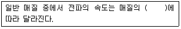
- 점도와 밀도
- 밀도와 도전율
- 도전율과 유전율
- 유전율과 투자율
(정답률: 88%)
42. 다음 중 고주파 전력을 전송하기 위한 급전선의 필요조건으로 적합하지 않는 것은?
- 보수가 용이할 것
- 전송효율이 좋을 것
- 유도방해를 주지 않을 것
- 특성 임피던스가 가급적 클 것
(정답률: 88%)
43. 주파수 1[MHz]에서 미소 다이폴의 복사전계와 정전계가 같아지는 거리는 안테나에서 약 몇 [m] 인가?
- 24[m]
- 48[m]
- 96[m]
- 192[m]
(정답률: 60%)
44. 면적이 0.1[m2]이고, 권수가 20회인 루프 안테나에 의해 1[MHz]인 전파를 복사 시키려고 한다. 이 안테나의 실효높이는 약몇 [m]인가?
- 0.01[m]
- 0.02[m]
- 0.04[m]
- 0.08[m]
(정답률: 82%)
45. 다음 중 카세그레인 안테나에 대한 설명으로 적합하지 않은 것은?
- 부엽이 매우 작다.
- 1개의 복사기와 2개의 반사기로 구성된다.
- 초점거리가 길고 복사기에서 고이득이 얻어진다.
- 대지에서의 잡음을 적게 받기 때문에 저잡음 특성의 안테나이다.
(정답률: 40%)
46. 다음 중 롬빅 안테나의 특징에 대한 설명으로 적합하지 않은 것은?
- 부엽이 많다.
- 효율이 좋다.
- 구조가 간단하나 넓은 설치장소가 필요하다.
- 진행파형이므로 광대역성이다.
(정답률: 50%)
47. 송ㆍ수신국 A, B가 있다. A 국의 안테나 높이는 해발 900[m]이고, B 국의 안테나 높이는 해발 625[m]일 때 전파 가시거리는 대략 몇 [km]인가?
- 185[km]
- 226[km]
- 283[km]
- 385[km]
(정답률: 46%)
48. 사용 파장을 λ[m]라 할 때 폴디드(folded) 다이폴 안테나의 실효길이는 몇 [m] 인가?
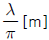
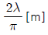
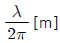
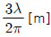
(정답률: 31%)
49. 다음 중 델린저(Dellinger)현상에 대한 설명으로 적합하지 않은 것은?
- 소실 현상(fade out)이라고도 한다.
- 태양면의 폭발에 기인한다.
- 단파통신에 주로 영향을 준다.
- 저위도 지방에서 야간에 발생한다.
(정답률: 94%)
50. 자기상사의 원리를 이용한 것으로서 단파대에서 마이크로파대까지 사용할 수 있는 광대역 안테나는?
- 빔 안테나
- 야기 안테나
- 루프 안테나
- 대수주기형 안테나
(정답률: 알수없음)
51. 다음 중 공전잡음을 경감시키는 방법으로 적합하지 않는 것은?
- 비 접지 안테나를 사용한다.
- 지향성 안테나를 사용한다.
- 송신출력을 증대시켜 수신점의 S/N비를 크게 한다.
- 수신기의 수신대역폭을 넓게 하여 수신 전력을 증가시킨다.
(정답률: 93%)
52. 복사저항이 30[Ω]이고 손실저항이 15[Ω], 도체 저항이 5[Ω] 인 안테나의 효율은 몇[%]인가?
- 30[%]
- 60[%]
- 70[%]
- 80[%]
(정답률: 80%)
53. F1층의 임계주파수가 5[MHz], 겉보기 높이가 100[Km]이고 송ㆍ수신점 간의 거리가 200[km]일 때 최적 운용주파수(FOT)는 약 몇[MHz] 인가?
- 4[MHz]
- 5.6[MHz]
- 6[MHz]
- 7.1[MHz]
(정답률: 47%)
54. 반파장 다이폴 안테나와 피측정 안테나에서 동일 방사전력으로 방사시킨 전파의 최대 방사 방향에서의 전계강도가 동일 거리에서 각각 100[μV/m]와 200[μV/m]이었다면 피측정 안테나의 상대이득은 몇 [dB]인가?
- 3[dB]
- 6[dB]
- 12[dB]
- 18[dB]
(정답률: 67%)
55. 다음 중 지상파의 전계강도에 영향을 주는 요소에 속하지 않는 것은?
- 송신기의 출력
- 전리층의 특성
- 송신 안테나의 특성
- 지형의 전기적 특성
(정답률: 알수없음)
56. 다음 중 전파의 성질에 관한 설명으로 적합하지 않은 것은?
- 전파는 횡파이다.
- 균일한 매질 중에 전파하는 전파는 직진한다.
- 반사와 굴절 작용이 있다.
- 주파수가 높을수록 회절 작용이 심하다.
(정답률: 70%)
57. 차단파장 λC=10[cm]인 구형 도파관에 5000[MHz]의 전파를 전송할 때 관내 파장 λg는 몇 [cm] 인가?
- 5.0[cm]
- 6.0[cm]
- 7.5[cm]
- 10.0[cm]
(정답률: 75%)
58. 도파관의 임피던스 정합 방법으로 적합하지 않은 것은?
- Stub에 의한 정합
- 도파관 창에 의한 정합
- 커플러에 의한 정합
- Q 변성기에 의한 정합
(정답률: 79%)
59. 다음 중 소형 경량으로 부엽이 적고 이득이 높아 선박용 레이더 안테나로 가장 적합한 것은?
- 헤리컬 안테나
- slot array 안테나
- 혼 리플렉터 안테나
- 전자나팔 안테나
(정답률: 74%)
60. 다음 중 반파장 다이폴 안테나에 대한 설명으로 적합하지 않은 것은?
- 반치각은 약 78° 이다.
- 실효길이는
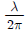
[m]이다. - 상대이득은 0[dB] 이다.
- 방사저항은 약 73[Ω] 이다.
(정답률: 62%)
4과목: 무선통신 시스템
61. 마이크로파 통신 중계방식에서 수신한 마이크로파를 중간 주파수로 변환, 검파한 후 다시 변조, 증폭하여 송신하는 방식은?
- 직접 중계방식
- 검파 중계방식
- 무급전 중계방식
- 헤테로다인 중계방식
(정답률: 58%)
62. IS-95 CDMA 이동통신에서 전력제어의 목적으로 적합하지 않은 것은?
- 이동국 배터리 수명 연장
- 균일한 통화품질 유지
- 인접 기지국 통화용량의 최대화
- 다중 경로에 의한 페이딩 방지
(정답률: 50%)
63. 다음 중 통신위성중계기(Transponder)의 주요 구성장치가 아닌것은?
- 저잡음 증폭부
- 속도 변환부
- 고전력 증폭부
- 파라볼라 안테나
(정답률: 60%)
64. OSI 7계층 중 종단 간(End to End)에 신뢰성 있고 투명한 데이터 전송을 제공하는 계층은?
- 물리계층
- 전송계층
- 응용계층
- 프리젠테이션계층
(정답률: 82%)
65. 마이크로파 전파 계통에서 송신출력이 1[W], 송ㆍ수신안테나 이득이 각각 50[dBi], 수신 입력레벨이 -23[dBm]일 때 자유 공간 손실은 몇 [dB]인가? (단, 도파관 손실 및 기타 손실은 무시한다.)
- 87[dB]
- 1⑤[dB]
- 130[dB]
- 153[dB]
(정답률: 알수없음)
66. 다음 중 지구국 안테나가 갖추어야 할 성능 조건으로 적합하지 않은 것은?
- 고 이득이어야 한다.
- 대역폭이 넓어야 한다.
- 지향성이 첨예하여야 한다.
- 잡음 온도가 높아야 한다.
(정답률: 70%)
67. 마이크로파 통신망 치국계획을 수립할 때 고려사항으로 가장 거리가 먼 것은?
- 총 경로손실
- 통신망의 성능
- 전력 소모율
- 총 장비이득
(정답률: 79%)
68. 주파수공용통신(TRS)이 경찰, 소방 등의 업무에 많이 이용되는 가장 큰 이득은?
- 음성통화 기능이 우수하다.
- 단일 주파수를 이용한다.
- 그룹통신, 일제통보 등의 기능이 우수하다.
- 안테나 자체 잡음은 T에 크게 영향을 주지 않는다.
(정답률: 90%)
69. 다음 중 위성통신시스템의 G/T에 대한 설명으로 가장 적합하지 않은 것은?
- 수신기의 성능지수를 나타낸다.
- G는 수신 안테나의 이득이다.
- T는 수신계의 총합 잡음온도이다.
- 안테나 자체 잡음은 T에 크게 영향을 주지 않는다.
(정답률: 84%)
70. 위성체와 지구국 사이에 적용되는 무선 다원접속방식 중에서 스펙트럼 확산통신 방식의 원리를 이용한 것은?
- 시분할 다원접속(TDMA)
- 주파수분할 다원접속(FDMA)
- 부호분할 다원접속(CDMA)
- 공간분할 다원접속(SDMA)
(정답률: 50%)
71. 다음 근거리 무선 통신망 시스템 중 전력소모가 상대적으로 가장 적은 것은?
- 무선랜
- 블루투스
- 지그비
- 와이브로
(정답률: 67%)
72. IS-95 CDMA 이동통신에서 순방향 링크 채널의 종류가 아닌 것은?
- 파일럿 채널
- 액세스 채널
- 페이징 채널
- 동기 채널
(정답률: 69%)
73. 다음 중 디지털 통신시스템의 성능 평가에 가장 적합한 것은?
- 왜율
- C/1
- BER
- S/N
(정답률: 87%)
74. 2단 증폭기에서 초단 증폭기의 이득 G1=12, 잡음지수 F1=1.5이고, 다음 단 증폭기의 이득 G2=20, 잡음지수 F2=2.2일 때 이 증폭기의 종합잡음지수는 얼마인가?
- 1.5
- 1.6
- 1.8
- 2.1
(정답률: 50%)
75. 다음 중 통신 프로토콜의 기본적인 기능이 아닌 것은?
- 캡슐화
- 동기와
- 부호화
- 다중화
(정답률: 알수없음)
76. 다음 중 다중경로 페이딩 등에 의해서 수신된 신호가 ISI(Inter Symbol Interference)가 일어나는 경우 이를 보정하기 위해서 필요한 것은?
- SAW 필터
- 등화기
- expander
- diversity 컴바이너
(정답률: 92%)
77. 다음 중 차세대 이동통신과 관련된 주요 기술과 가장 관련이 적은 것은?
- SDR
- GAN
- OFDM
- MIMO
(정답률: 59%)
78. IEEE의 작업 그룹에서 개발한 무선 랜 규격은?
- IEEE 802.9
- IEEE 802.10
- IEEE 802.11
- IEEE 802.12
(정답률: 100%)
79. 다음 중 잡음방해의 개선 방법으로 적합하지 않은 것은?
- 수신 전력을 크게 한다.
- 수신기의 실효대역폭을 넓게 한다.
- 적절한 통신방식을 선택한다.
- 송신전력을 크게 하고 수신기를 차폐한다.
(정답률: 알수없음)
80. 다음 중 IS-95 CDMA 이동통신에 사용되는 PN 코드의 특성으로 적합하지 않은 것은?
- 평형 특성
- 런(Run) 특성
- 천이 및 가산 특성
- 최소 길이(minimal-length) 특성
(정답률: 79%)
5과목: 전자계산기 일반 및 무선설비기준
81. 입ㆍ출력 과정에서 CPU의 역할이 가장 큰 방식은?
- Programmed I/O
- Interrupt-Driver I/O
- DMA
- Channel I/O
(정답률: 87%)
82. 다음 각 자료형 중 가장 적은 비트의 수를 필요로 하는 것은?
- 실수형(real type) 자료
- 정수형(integer type) 자료
- 문자형(character type) 자료
- 논리형(boolean type) 자료
(정답률: 82%)
83. 비트 슬라이스 마이크로 프로세서의 구성을 가장 잘 설명한 것은?
- 프로세서 유니트, 마이크로프로그램 시퀀서, 콘트롤 메모리가 각각 다른 IC로 구성된 프로세서를 말한다.
- 프로세서 유니트, 마이크로프로그램 시퀀서, 콘트롤 메모리가 한 IC로 구성된 프로세서를 말한다.
- CPU를 하나의 IC로 만든 프로세서이다.
- CPU, 기억장치, I/O 포트가 한 IC에 구성된 프로세서이다.
(정답률: 67%)
84. 어셈블리 언어의 명령 수행 문장에 대한 구성 요소와 관계가 먼 것은?
- Mnemonic
- Name(또는 Label)
- Operand
- Procedure
(정답률: 24%)
85. 연산의 속도를 빠르게 하기 위하여 부동 소수점 연산을 전문적으로 수행하는 장치는?
- co-processor
- RAM
- ROM
- cache
(정답률: 80%)
86. 분산 운영체제의 구조 중 다음 설명에 해당하는 것은?
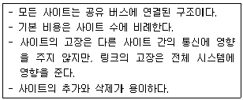
- Ring Connection
- Star Connection
- Hierarchy Connection
- Multi-access Bus Connection
(정답률: 63%)
87. 분기명령어 길이가 3바이트 명령어이고 상대 주소모드인 경우 분기명령어가 저장되어 있는 기억장치 위치의 주소가 256AH이고, 명령어에 지정된 변위 값이 -75H인 경우 분기되는 주소의 위치로 옳은 것은?
- 24F2H 번지
- 24F5H 번지
- 24F8F 번지
- 256DH 번지
(정답률: 60%)
88. 10진수 47.625를 2진수로 변환한 것으로 옳은 것은?
- 101111.111
- 101111.010
- 101111.001
- 101111.101
(정답률: 92%)
89. 캐시 메모리의 매핑방법 중 같은 인덱스를 가졌으나 다른 tag를 가진 두 개 이상의 워드가 반복하여 접근된다면 히트율이 상당히 떨어질 수 있는 것은?
- associative 매핑
- set-associative 매핑
- direct 매핑
- indirect 매핑
(정답률: 알수없음)
90. 다음 중 선점 스케줄링에 대한 설명으로 틀린 것은?
- 일괄처리 방식에 적합하다.
- 경비가 많이 들고 오버헤드까지 초래한다.
- 우선순위를 고려해야 한다.
- 문맥교환의 횟수가 비선점 방식에 비해서 많다.
(정답률: 85%)
91. 다음 ( ) 안에 들어갈 내용으로 가장 적합한 것은?
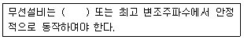
- 최대 진폭
- 실효복사전력
- 최대 주파수편이
- 최고 통신속도
(정답률: 50%)
92. 무선설비에 대한 형식점정을 받고자 할 때는 관련 자료를 누구에게 제출하여야 하는가?
- 전파연구소장
- 방송통신위원장
- 중앙전파관리소장
- 무선국관리 사업단장
(정답률: 50%)
93. 다음 중 수신 설비가 충족하여야 하는 조건에 속하지 않는 것은?
- 선택도가 클 것
- 명료도가 클 것
- 내부 잡음이 적을 것
- 감도는 낮은 신호입력에서도 양호할 것
(정답률: 알수없음)
94. 다음 중 무선국의 허가증에 적을 사항이 아닌 것은?
- 무선국의 목적
- 허가의 유효기간
- 무선종사자의 성명
- 무선설비의 설치 장소
(정답률: 64%)
95. 다음 중 송신장치의 종단증폭기의 정격출력을 말하는 것은?
- 규격 전력(PR)
- 평균 전력(PY)
- 반송파 전력(PZ)
- 첨두포락선 전력(PX)
(정답률: 34%)
96. 전파형식이 R3E, H3E, J3E 인 무선국의 무선설비의 점유주파수대폭의 허용치는?
- 500[Hz]
- 1[kHz]
- 3[kHz]
- 6[kHz]
(정답률: 92%)
97. 다음 중 준공검사를 받지 아니하고 운용할 수 있는 무선국에 속하지 않는 것은?
- 적도 지역에 개설한 무선국
- 대통령 경호를 위하여 개설하는 무선국
- 30와트 미만의 무선설비를 시설하는 어선의 선박국
- 외국에서 운용할 목적으로 개설한 육상이동지구국
(정답률: 50%)
98. 의무항공기국의 예비전원은 항공기의 항행안전을 위하여 필요한 무선설비를 얼마 이상 동작시킬 수 있는 성능을 가져야 하는가?
- 10분
- 30분
- 1시간
- 2시간
(정답률: 63%)
99. 무선국에서 사용하는 주파수마다의 중심 주파수를 무엇이라 하는 가?
- 기준주파수
- 지정주파수
- 특성주파수
- 필요주파수
(정답률: 39%)
100. 다음 중 주파수를 분배할 때 고려해야 할 사항이 아닌 것은?
- 전파이용 기술의 발전 추세
- 전파를 이용하는 서비스에 대한 수요
- 중ㆍ장치 주파수 이용계획
- 국제적인 주파수 사용동향
(정답률: 65%)